iOS code signing
To install your iOS app on a new device or to distribute your app to App Store, you will need to provide code signing files. The code signing of iOS projects requires signing certificates issued by Apple and provisioning profile file(s) matching your project.
To install your iOS app on a new device or to distribute your app to App Store, you will need to provide code signing files. The code signing of iOS projects requires:
Signing certificates issued by Apple.
Provisioning profile file(s) matching your project (team ID, bundle ID, and so on).
Methods | How it works | When to use it |
|---|---|---|
You only need to upload the code signing certificate(s) to Bitrise and to establish an Apple Service connection (either via App Store Connect API key or through an Apple ID). Bitrise will download, create or renew the provisioning profile(s) and handle App ID and test device registration automatically. | This is the recommended option for most apps. With this option, managing your provisioning profiles is seamless and it's much easier to set up your Workflows. | |
You need to upload the code signing certificate(s) and also the provisioning profile(s) to Bitrise and keep the provisioning profile(s) updated with your iOS project. | Choose this option if:
You might also prefer this option if you are using an account with Apple Developer Enterprise Program. In this case only Apple ID-based authentication is supported. This has certain limitations: for example, needs to be renewed every 30 days. |
Collecting and exporting code signing files with codesigndoc
The open source codesigndoc tool runs a clean Xcode Archive on your Mac, and analyzes the generated archive file. It collects the code signing settings that Xcode used during the archive process, and prints the list of the required code signing files. You can also search for, export and upload these files using codesigndoc.
The open source codesigndoc tool runs a clean Xcode Archive on your Mac, and analyzes the generated archive file. It collects the code signing settings that Xcode used during the archive process, and prints the list of the required code signing files. You can also search for, export and upload these files using codesigndoc.
If your project contains UITest targets, codesigndoc can scan for those, too. It runs the xcodebuild build-for-testing action to create a test-Runner.app, and exports the necessary code signing files.
Collecting and uploading the files with codesigndoc
You can use codesigndoc for:
Xcode projects.
The app does not have to be a native iOS app: you can use the tool with an app built with a third-party framework, such as Flutter, if you have an .xcodeproj or .xcworkspace file.
You can install the latest version of codesigndoc with a simple one-liner or you can manually download and install the specific version you want to use:
In the below example, we’ll use the one-liners.
Open the
Terminal.Go to your project’s folder.
Enter the appropriate one-liner command, depending on your project type.
For a Xcode project:
bash -l -c "$(curl -sfL https://raw.githubusercontent.com/bitrise-io/codesigndoc/master/_scripts/install_wrap-xcode.sh)"
The tool will automatically scan your project and look for a
.xcodeprojor.xcworkspacefile and do the rest.If the scanner does not find the files, open your
Finder.appand drag-and-drop your project’s.xcodeprojor.xcworkspacefile into the command line in your Terminal.Once the code signing files are collected,
codesigndocwill ask if you wish to upload the files to Bitrise:Do you want to upload the provisioning profiles and certificates to Bitrise? [yes/no] :
If you wish to upload the files with
codesigndoc, typeyesand press Enter.Provide your Bitrise access token:
Please copy your personal access token to Bitrise. (To acquire a Personal Access Token for your user, sign in with that user on bitrise.io, go to your Account Settings page, and select the Security tab on the left side.) :
Select the Bitrise project as a target for the collected files:
Fetching your application list from Bitrise... Select the app which you want to upload the provisioning profiles Please select from the list:
That’s all, you are done!
Automatic code signing asset management
For automatic code signing asset management, we recommend you use one of our code signing and building Steps:
You can also install and run codesigndoc manually. For more information, check out the tool’s Readme!
Scanning for UITest targets
If your Xcode project has UITest targets, you can use codesigndoc to export the necessary code signing files and generate an .xctestrun file. You need to do this if you want to run UI tests on real devices with the help of Bitrise - for example, with the iOS Device Testing Step.
Make sure you have a scheme that has a valid UITest target that is enabled.
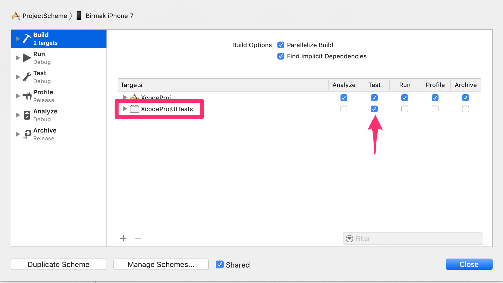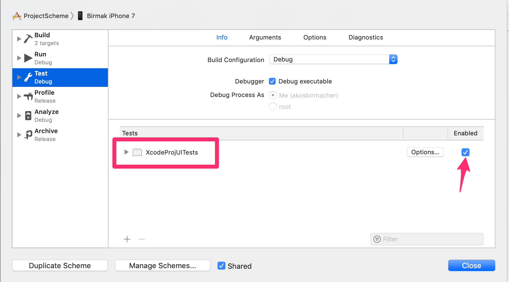Open the
Terminal.Use our one-liner to launch the scanner and export the required code signing files:
bash -l -c "$(curl -sfL https://raw.githubusercontent.com/bitrise-tools/codesigndoc/master/_scripts/install_wrap-xcode-uitests.sh)"
This command runs the
xcodebuild build-for-testingaction to create a UITest runner .app file, and exports the necessary code signing files.Upload the files to Bitrise with codesigndoc.
Troubleshooting the UITest scanner
If the UITest scanner cannot find the desired scheme, follow these steps:
Make sure your scheme is valid for running a UITest.
It has to contain a UITest target that is enabled to run.
Refresh your project settings:
Select the Generic iOS Device target for your scheme in Xcode.
Clean your project:
⌘ Cmd + ↑ Shift + K.Run a build for testing:
⌘ Cmd + ↑ Shift + U.
Manually installing and using codesigndoc
With manual install, you can specify which version of codesigndoc you want to use. Unlike with the one-liners used above, the manual install does not automatically run the scan command in the folder you use it in: it merely installs the tool.
Check out the available versions on the releases page of the codesigndoc tool.
Download the release you want by running a
curlcommand:Note: replace the VERSIONNUMBER with the actual number of the codesigndoc version you want.
curl -sfL https://github.com/bitrise-io/codesigndoc/releases/download/VERSIONNUMBER/codesigndoc-Darwin-x86_64 > ./codesigndoc
Make the downloaded binary executable:
chmod +x ./codesigndoc
Run the scan command any time you wish:
## Xcode scanner ./codesigndoc scan xcode ## Xcode project scanner for UI test targets ./codesigndoc scan xcodeuitests
Best practices of using codesigndoc
You get the most accurate result if you run codesigndoc on the same state of your repository/code which is available after a clean git clone, as that will be the state of the code after the build server checks it out (for example, you might have files on your Mac which are in .gitignore, so it exists on your Mac but not in the repository or after a git clone on a new Mac).
So, for the best results, we recommend you to:
Do a clean
git cloneof your repository (into a new directory) on your Mac.Run
codesigndocin this directory (not in the directory where you usually work on the project).
We also recommend generating an IPA on your local machine first, and run codesigndoc after that. The reason is that Xcode might download or update profiles in the background during the IPA export. If you run codesigndoc after you exported a IPA from Xcode, codesigndoc will able to collect all the files.
iOS code signing with automatic provisioning
Automatic code signing means automatically managing the provisioning profiles that are available on your Apple Developer Portal account. If you set up some form of authentication to your Apple account, Bitrise can download and install the provisioning profile for your app during the build process.
On Bitrise, we're aiming to make iOS code signing as simple as possible for you. As such, we've done our best to automate a lot of the process. Several of our Steps have a built-in option for automatic code signing management to make configuration a lot more streamlined.
Automatic code signing in this context means automatically managing the provisioning profiles that are available on your Apple Developer Portal account. If you set up some form of authentication to your Apple account, Bitrise can download and install the provisioning profile for your app during the build process.
To use this feature, you need to:
Connect your Apple Developer Portal account to Bitrise either via Apple ID or via the App Store Connect API.
Use one of the Steps that support automatically managing code signing assets.
Uploading iOS code signing certificates to Bitrise
All iOS code signing methods require you to export and upload your iOS code signing certificates to Bitrise.
Generating code signing files
If you don't have the necessary code signing files ready, you can generate new files: Generating iOS code signing files
To upload the certificates to Bitrise, first you need to export the files in the .p12 file format. Once you successfully exported the files, you need to upload them to Bitrise. You have two options:
Uploading it manually. This guide focuses on this option.
Upload the distribution AND the development signing certificates
We strongly recommend uploading BOTH the development and distribution signing certificates for your project. If you don't have an uploaded development signing certificate, Steps with automatic provisioning options will generate one on the fly every time you start a build. This can eventually lead to reaching the maximum number of certificates, blocking you from starting new builds.
To export your certificates and upload them to Bitrise in the Workflow Editor:
Make sure you have your .p12 certificates exported and ready.
Open your app on Bitrise with a user that has the Admin role on the app.
On the main page of the app, click on the App Settings icon:
 .
.
On the left, select the Code signing menu option.
Click to add a certificate.
In the dialog box, either drag and drop the file into the Select a code signing certificate section, or click the same section and select the file you want to upload.
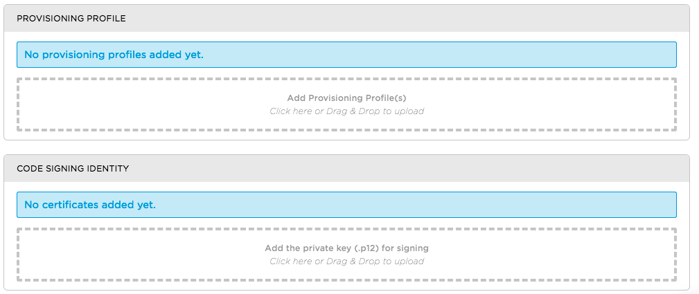Certificate password
If your certificate is protected by a password, you need to set the password here, too.
When done, click .
Check the summary and if everything is okay, click .
Apple services authentication for automatic provisioning
To take advantage of the Bitrise Steps that offer built-in, automated iOS code signing options, you need to set up Apple service authentication. For these Steps, you have two options.
Authentication method | How it works | When to use |
|---|---|---|
API key authentication (recommended) | You connect your App Store Connect account to Bitrise using an API key. | We recommend using this option unless you are using an account with Apple Developer Enterprise Program. If you do not receive the option to create an API key and the request access is greyed out, you need to contact your account holder to accept a license agreement with Apple to use API authentication. |
You connect your Apple ID to Bitrise. If two-factor authentication is enabled on your Apple account, you will have to provide the App-specific password during this process. Your authentication expires in 30 days and you will have to refresh the connection. | You should only use this solution if:
You can also consider using manual provisioning. |
Configuring the Steps for automatic provisioning
There are two ways to handle automatic provisioning on Bitrise:
Using the official Xcode Steps that can both manage code signing files and build your app.
Using the Manage iOS Code Signing Step.
Table 22, “Steps with automatic provisioning options” describes the use cases for the two methods. To be able to configure the necessary Steps, check out either:
Don't use the Certificate and profile installer Step
If you use automatic provisioning, you never need to use the Certificate and profile installer Step.
Steps | How they work | When to use |
|---|---|---|
Xcode Steps:
| These Steps set up code signing in your Xcode project automatically with nearly zero configuration. | We recommend using these Steps in most scenarios. |
Manage iOS Code Signing Step | This Step will set up code signing in your Xcode project before running a build. | You can use this dedicated Step if:
|
Using the Xcode Steps
You can use any of the Xcode Steps with built-in automatic management of code signing assets.
Set up connection to Apple services.
You can choose between API key authentication or Apple ID authentication. We generally recommend API key authentication.
Add any of the following Steps to your Workflow, depending on what you need:
Xcode Archive and Export for iOS: Builds your Xcode app and exports an IPA of the type you choose.
Export iOS and tvOS Xcode Archive: Exports an IPA from an already existing archive.
Xcode build for testing for iOS: Builds your Xcode app with the
build-for-testingaction.
Set the Automatic code signing method input to the Apple service authentication type you set up.
For example, if you chose API key authentication, choose the option.
In this example, the Xcode Archive and Export for iOS Step is set to use API key authentication.
- xcode-archive@4:
inputs:
- automatic_code_signing: api-keyIn most cases, the default values for all other inputs are sufficient if you set up your Apple connection correctly.
Using the Manage iOS Code Signing Step
Use our dedicated Step for automatically managing code signing assets if you do not use one of the Xcode Steps to build your iOS app, or if you have a cross-platform app.
Add the Manage iOS Code Signing Step after any dependency installer Step in your Workflow, such as Run CocoaPods install or Carthage.
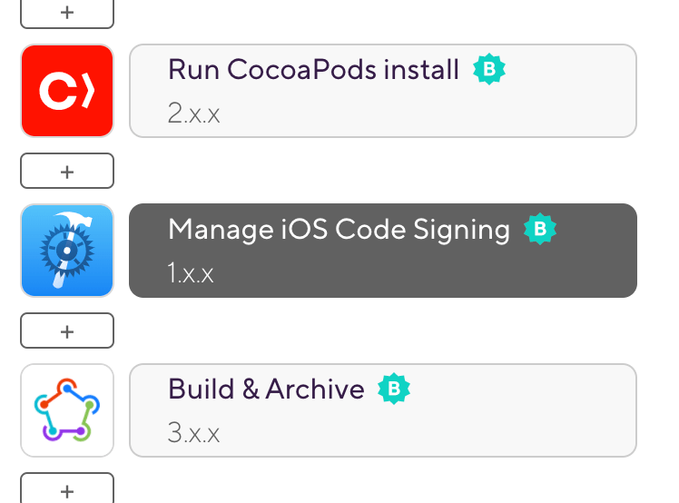Set the Automatic code signing input to the Apple service connection you want to use.
You can choose between API key authentication or Apple ID authentication.
If you use Apple ID authentication, you should also enter your team ID to The Developer Portal team ID input.
Make sure you do NOT modify your Xcode project after this Step.
For example, don't change the bundle ID.
Add a Step that builds and archives the app, such as the fastlane Step.
iOS code signing with manual provisioning
To manage your code signing files manually, you need to upload your .p12 signing certificates and the app's provisioning profiles to Bitrise. There are multiple ways to do this.
To manage your code signing files manually, you need to upload your .p12 signing certificates and the app's provisioning profiles to Bitrise.
You always need to upload at least a Developer certificate and a Development type provisioning profile! That is necessary for our Xcode Steps to be able to test and build your apps properly.
Generating code signing files
If you don't have the necessary code signing files ready, you can generate new files: Generating iOS code signing files
To upload the code signing files to Bitrise, first you need to export the files in the .p12 file format. Once you successfully exported the files, you need to upload them to Bitrise. You have two options:
Uploading it manually to Bitrise. This guide focuses on this option.
To manually upload your code signing files to Bitrise:
Make sure you have your .p12 certificates and provisioning profiles exported and ready. Check out Exporting iOS code signing files for more information.
Open your app on Bitrise with a user that has the Admin role on the app.
On the main page of the app, click on the App Settings icon:
.On the left, select Code signing from the menu.
Add your files:
To add a certificate, click the button. In the dialog box, upload the file and, if required, provide the password for the certificate.
To add provisioning profiles, click the button. In the dialog box, upload the file(s).
Make sure you have the Certificate and profile installerStep in your app’s Workflow. You can check it on the Workflow tab of the Workflow Editor.
Please note that these Steps must be BEFORE the Steps that archive and export your app (for example, Xcode Archive & Export for iOS) in your Workflow.
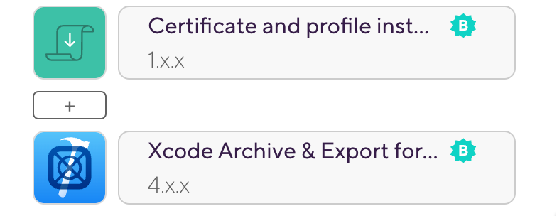
Creating a signed IPA for Xcode projects
You can easily create a signed IPA file for your Xcode project with Bitrise if you have your Apple connection set up correctly and you made code signing files available to your builds.
Overview on iOS code signing in Bitrise
For a comprehensive overview on what Steps are available for code signing asset management, visit the iOS code signing page.
You can easily create a signed IPA file for your Xcode project with Bitrise.
You have set up Apple service connection on Bitrise.
You set the relevant inputs of our Xcode Archive and Export for iOS Step.
Upload the distribution AND the development signing certificates
We strongly recommend uploading BOTH the development and distribution signing certificates for your project. If you don't have an uploaded development signing certificate, Steps with automatic provisioning options will generate one on the fly every time you start a build. This can eventually lead to reaching the maximum number of certificates, blocking you from starting new builds.
If you’re all set, proceed to setting up IPA export in your Workflow.
Workflow Editor
bitrise.yml
Make sure the necessary code signing files have been collected and uploaded.
Make sure you have the Xcode Archive & Export for iOS Step in your Workflow.
Set the Distribution method input of the Step.
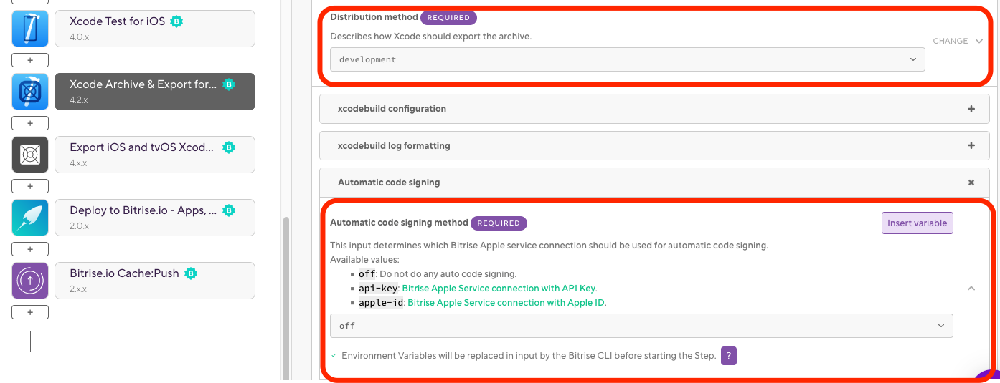The options are:
auto-detect- Please note that this option is deprecated and will be removed. We do not recommend using it.app-store: Choose this if you want to deploy the app to the App Store. Requires a Distribution certificate and an App Store provisioning profile.ad-hoc: Choose this if you want to deploy the app to ad-hoc testers. Requires a Distribution certificate and an Ad Hoc provisioning profile.enterprise: Choose this if you have an Apple Enterprise account and want to use that to distribute your app.development: Choose this for internal testing. Requires a Developer certificate and a Development provisioning profile.
Set the Automatic code signing input to the Apple service connection you want to use for code signing. The available options are:
offif you don’t do automatic code signing.api-keyif you use API key authorization.apple-idif you use Apple ID authorization.
Save the Workflow, and start a new build.
Make sure all the necessary code signing files are available for your build.
Open the
bitrise.ymlfile of your app.Make sure you have the
xcode-archiveStep in your Workflow.my-workflow: steps: - xcode-archive: inputs:Set the
distribution_methodinput to the correct value. The available options are:app-store: Choose this if you want to deploy the app to the App Store. Requires a Distribution certificate and an App Store provisioning profile.ad-hoc: Choose this if you want to deploy the app to ad-hoc testers. Requires a Distribution certificate and an Ad Hoc provisioning profile.enterprise: Choose this if you have an Apple Enterprise account and want to use that to distribute your app.development: Choose this for internal testing. Requires a Developer certificate and a Development provisioning profile.
my-workflow: steps: - xcode-archive: inputs: - distribution_method: developmentSet the
automatic_code_signinginput to the Apple service connection you want to use for code signing. The available options are:offif you don’t do automatic code signing.api-keyif you use API key authorization.apple-idif you use Apple ID authorization.
my-workflow: steps: - xcode-archive: inputs: - automatic_code_signing: api-key - distribution_method: development
That’s all. Xcode will automatically select the right signing files based on your project’s Bundle ID and Team ID settings, and the export method you set.
Signing an IPA file with a different team’s code signing file
You might want to sign the IPA file with a different team’s code signing files. For example:
If you use your company’s code signing files for internal builds, but your client’s code signing files are used for App Store distribution.
If you use Apple ID for automatic code signing and the Apple ID belongs to multiple teams, use The Developer Portal team to use for this export input to specify which team should be used for automatic code signing asset management.
To do so:
Make sure the right code signing files of the new development team are uploaded to Bitrise.
Set the The Developer Portal team to use for this export option as well (in addition to the Distribution method).
Set the Distribution method.
Signing an IPA with multiple code signing identities
You can create multiple IPA files with different code signing identities within a single Bitrise build. You just need to make sure the required code signing files are available and use the Export iOS and tvOS Xcode archive Step.
Note
Overview on iOS code signing asset management
For a comprehensive overview on what Steps are available for code signing asset management, visit the iOS code signing page.
You can create multiple IPA files with different code signing identities within a single Bitrise build.
During the development of your iOS app you will need multiple types of distributions for different purposes, such as internal testing or deployment to the App Store. The good news is that this does not require setting up two separate workflows on bitrise.io.
In this example we’ll be setting up a Workflow to create two signed IPA files: one with the development and one with the app-store export method.
Advanced configuration options
The procedure lists the bare minimum requirements to configure these Steps to export Xcode archives. Check out the Step in the Workflow Editor or the Step's step.yml in GitHub to see all potential configuration options, including but not limited to overriding the Bitrise-managed automatic code signing options, recompiling from and including bitcode, or using a specific .plist file to configure exporting.
Workflow Editor
bitrise.yml
Make sure all the necessary code signing files are available for your build.
Make sure you have the Xcode Archive & Export for iOS Step in your Workflow.
In the list of input variables, navigate to Distribution method and select development from the dropdown menu.

Set the Automatic code signing method input to the Apple service connection you want to use for code signing. The available options are:
offif you don’t do automatic code signing.api-keyif you use API key authorization.apple-idif you use Apple ID authorization.
Add the Export iOS and tvOS Xcode archive Step to your Workflow. This Step reuses the archive generated by the Xcode Archive and Export for iOS Step and does a second export from the archive.
Set the Automatic code signing method input to the Apple service connection you want to use for code signing. The available options are:
offif you don’t do automatic code signing.api-keyif you use API key authorization.apple-idif you use Apple ID authorization.
In the list of input variables, navigate to Distribution method and select app-store from the dropdown menu.

Make sure all the necessary code signing files are available for your build.
Open the
bitrise.ymlfile of your app.Make sure you have the
xcode-archiveStep in your Workflow.my-workflow: steps: - xcode-archive: inputs:Set the
distribution_methodinput todevelopment.my-workflow: steps: - xcode-archive: inputs: - distribution_method: developmentSet the
automatic_code_signinginput to the Apple service connection you want to use for code signing. The available options are:offif you don’t do automatic code signing.api-keyif you use API key authorization.apple-idif you use Apple ID authorization.
my-workflow: steps: - xcode-archive: inputs: - automatic_code_signing: api-key - distribution_method: developmentAdd the
export-xcarchiveStep to your Workflow. This Step reuses the archive generated by thexcode-archiveStep and does a second export from the archive.my-workflow: steps: - xcode-archive: inputs: - automatic_code_signing: api-key - distribution_method: development - export-xcarchive: inputs:Set the
automatic_code_signinginput to the Apple service connection you want to use for code signing. The available options are:offif you don’t do automatic code signing.api-keyif you use API key authorization.apple-idif you use Apple ID authorization.
my-workflow: steps: - xcode-archive: inputs: - automatic_code_signing: api-key - distribution_method: development - export-xcarchive: inputs: - automatic_code_signing: api-keySet the
distribution_methodinput toapp-store.my-workflow: steps: - xcode-archive: inputs: - automatic_code_signing: api-key - distribution_method: development - export-xcarchive: inputs: - automatic_code_signing: api-key - distribution_method: app-store
And you’re done! Feel free to add multiple Export iOS and tvOS Xcode archive Steps to your Workflows to create multiple different signed .ipa files if necessary.
iOS code signing for Ionic and Cordova projects
Bitrise supports both manual and automatic provisioning for the iOS code signing of Ionic and Cordova apps as well.
Naturally, Bitrise supports iOS applications built with either Ionic or Cordova. However, the code signing process is slightly different compared to a native Xcode project.
Bitrise supports both manual and automatic provisioning for Ionic and Cordova apps as well - and once again, the processes are somewhat different.
Ionic/Cordova code signing with manual code signing asset management
Generate the native Xcode project locally from your Ionic or Cordova project by calling
cordova platform add iosorionic cordova platform add ios.Upload the files to bitrise.io.

Make sure you have the Certificate and profile installer Step in your Workflow.
Add the Generate cordova build configuration Step to your Workflow. It must come after the Certificate and profile installer Step.
Fill in the required inputs for the Step. Please note that both the Code Signing Identity and the Provisioning Profile are required inputs for iOS apps even though they are not marked as such.
Build configuration: you can set it to either
debugorrelease.Code Sign Identity: enter a Developer or a Distribution identity.
Provisioning Profile: enter the appropriate provisioning profile.
Packaging Type: this controls what type of build is generated by Xcode. Set the type of code signing you need.

Add the
Cordova archiveor theIonic archivestep to your workflow.Fill in the required inputs.
The Platform input needs to be set to:
device.The Build command configuration input must match the Build configuration input of the Generate cordova build configuration Step.
This Step must come after the Generate cordova build configuration Step in the Workflow.
Run your build!
Ionic/Cordova code signing with automatic code signing asset management
Make sure your .p12 signing certificates are uploaded to bitrise.io.
Add the Cordova prepare or the Ionic prepare Step to your Workflow. These Steps call the
platform rmandplatform addcommands.Add the Manage iOS Code Signing Step to your Workflow. If you have both the Certificate and Profile Installer and the Manage iOS Code Signing Steps in your Workflow, your build might encounter unexpected issues.
The Step will export:
The project’s development team.
The installed codesign identity’s name.
The installed provisioning profile.
One code signing Step only
If you have both the Certificate and profile installer and the Manage iOS Code Signing Steps in your Workflow, your build might encounter unexpected issues.
Select the Apple service connection method (based on the Apple service you have set up in Bitrise) and the Distribution method.

Add the Generate cordova build configuration Step to your Workflow.
Configure the Step to use the code signing settings exported by the Manage iOS Code Signing Step:
Development distribution example:
- generate-cordova-build-configuration: inputs: - development_team: $BITRISE_DEVELOPER_TEAM - package_type: development - code_sign_identity: iPhone Developer - configuration: debugProduction distribution example:
- generate-cordova-build-configuration: inputs: - development_team: $BITRISE_DEVELOPER_TEAM - package_type: app-store - code_sign_identity: iPhone Developer - configuration: releaseAdd the Cordova Archive or the Ionic Archive Step to your Workflow.
Fill in the required inputs.
The Platform input needs to be set to:
device.The Build command configuration input must match the Build configuration input of the Generate cordova build configuration Step.

Set the Should remove platforms as prepare step? to
false. This is crucial: it ensures the Step will not remove and re-add the platform of the native projects generated in the Cordova prepare or the Ionic prepare Step.Run your build!
Protecting your code signing files
You can set your code signing files to Protected mode: this means they cannot be downloaded from your bitrise.io account. Your builds will be able to use these protected files but no one will be able to reveal them and there is no way to overwrite them: you can only delete the files and upload new ones instead.
You can set your code signing files to Protected mode: this means they cannot be downloaded from your bitrise.io account. Your builds will be able to use these protected files but no one will be able to reveal them and there is no way to overwrite them: you can only delete the files and upload new ones instead.
Open your app on Bitrise with a user that has the Admin role on the app.
On the main page of the app, click on the App Settings icon:
.On the left, select Code signing from the menu.
Locate the file you wish to make protected and open the dropdown menu by clicking the ellipsis button on the right.
Select the Make protected option.
A dialog box will warn you that this change is irreversible once you confirm it. You do not need to separately save your changes.
Once you are done, your only option in the file’s dropdown menu will be Delete.
Generating iOS code signing files
You can generate iOS code signing files either with Xcode or on the Apple Developer Portal.
You’ll need two kinds of files to sign your app: certificates and provisioning profiles.
The certificates - development or distribution - are the guarantee that you, the named developer, built this code, that you are a member of the developer program, and that Apple have issued you with a certificate to do so.
To get a certificate, you need to generate a Certificate Signing Request with Keychain Access and send it to Apple. This will create a public/private key pair for you if you don’t have one already. Apple will then verify the information, and create a certificate for you.
Provisioning is the process of preparing and configuring an app to launch on devices and to use app services. Development provisioning profiles holds the device identifiers (UUID) that is eligible to run your app. Distribution provisioning profiles can include App Store profiles that allow you to distribute your app to the App Store. Ad-hoc profiles are good for distributing to your testers.
Generating a code signing certificate with Xcode
First you have to add your Apple ID to Accounts preferences in Xcode. If you are already done with this, you can skip to Selecting your Apple ID.
Start Xcode.
Select Xcode > Preferences from the navigation bar.
At the top of the window select Accounts.
Click on the + on the lower left corner and select Add Apple ID…
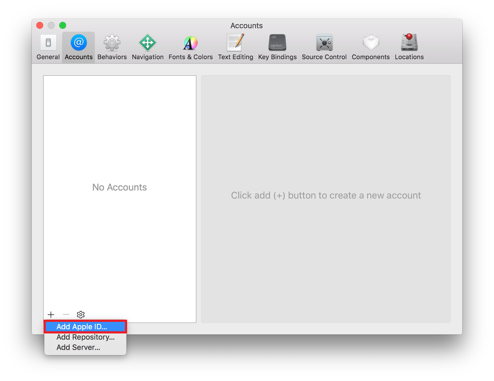A dialog will appear. Add your Apple ID and your password, then select Sign in. If you don’t have an account you can create your Apple ID by selecting Create Apple ID.
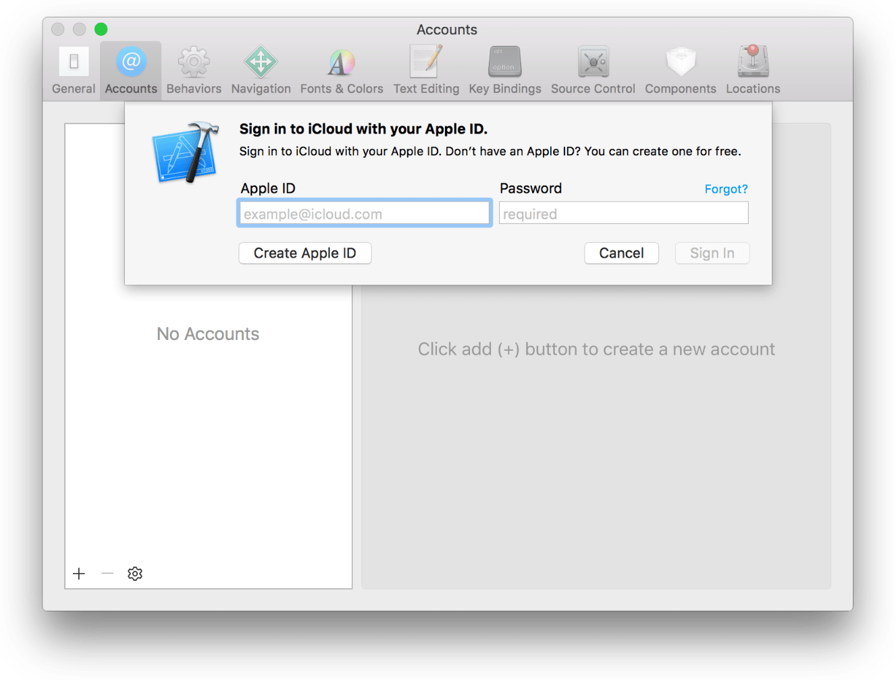Select your Apple ID and your team from the right side bar, then click on View Details….
A dialog will appear where you will see your code signing identities and the provisioning profiles.
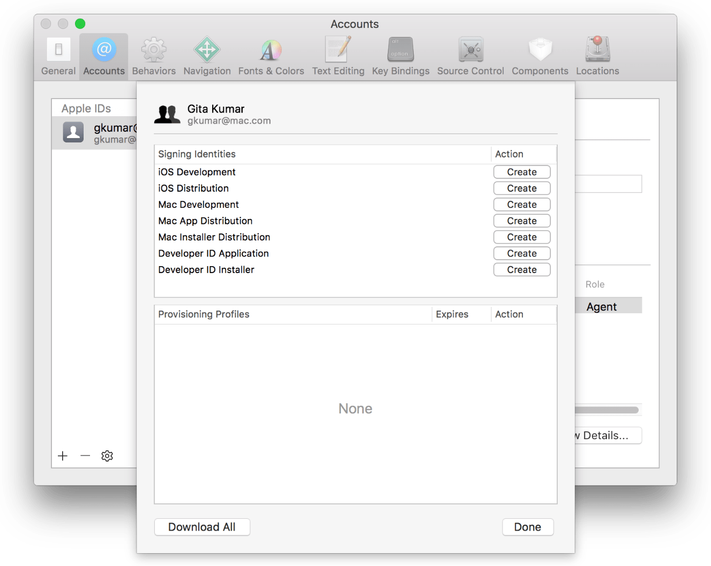Under the signing identities locate the iOS Development and iOS Distribution profiles. If you have not created them you will see a Create button next to them. Simply select it and Xcode will issue and download your code signing identities for you.
When to click Reset next to Code Signing Identities
If you already have Code Signing Identities issued, you will see a Reset button next to them. You can issue new certificates with it, that Xcode will generate and download, however note that this will invalidate your previous certificate, so only do this if you’ve lost those files or if you know what you are doing!
Generating a code signing certificate manually
Open your Keychain Access app on macOS.
Select Keychain Access > Certificate Assistant > Request a Certificate From a Certificate Authority…
Fill in the User’s Email Address and the Common Name and select Saved to Disk.
Click on Continue and save the generated
certSigningRequestfile locally.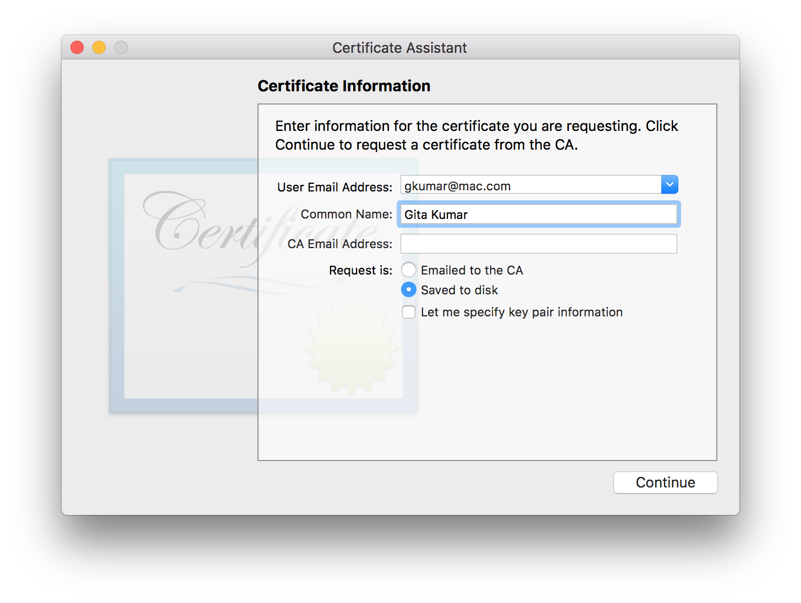Go to https://developer.apple.com and log in to your account.
Select Certificates, IDs & Profiles from the left sidebar.
Go to Certificates and click on the + button on the top right corner.
Select iOS App Development and click Continue.
On the next page you see the instructions for creating the
certSigningRequestfile. Click Continue.Upload the created
certSigningRequestto the form and click Continue. It will generate your code signing certificate for you.Download the certificate and double click to install it. Once installed it will be added to your Keychain Access app.
Generating a provisioning profile with Xcode
Xcode will automatically generate an App ID for your project, that matches your unique bundle ID for your project. An App ID is used to identify one or more of your apps. It can be an explicit App ID that only matches one unique bundle identifier or a wildcard App ID that can match multiple ones.
Xcode will also create a Team Provisioning Profile for your project automatically, so you can start deploying to your device automatically.
If you hit any issues you should make sure that the device is eligible, for example if the device doesn’t match the deployment target you will get an error. Also make sure that your app is connected to the correct Team.
To generate a provisioning profile using Xcode:
Select your project file from Xcode’s project navigator.
Go to the Signing section and under the Team select your correct team.
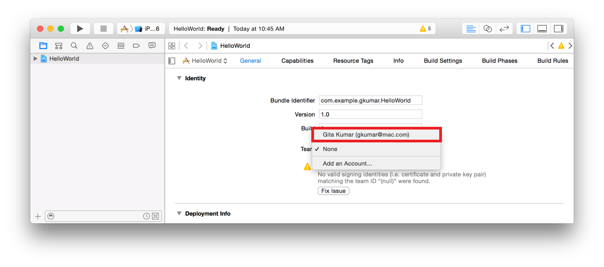Build your project in Xcode.
To download a provisioning profile from Xcode:
Start Xcode.
Select Xcode > Preferences from the navigation bar.
At the top of the window select Accounts.
Select your Apple ID and your team, then select Download Manual Profiles.
Go to
~/Library/MobileDevice/Provisioning Profiles/and your profiles should be there.
Generating a provisioning profile manually
To generate a provisioning profile manually, you need a working Apple Developer account, and you need to set up an App ID for your project.
Setting up an App ID
If you haven’t already created an App ID for your project, go to https://developer.apple.com and log in.
Select Certificates, Identifiers & Profiles from the left sidebar.
Navigate to Identifiers > App IDs.
In the App ID Description add a recognizable name for your App ID.
Select Explicit App ID and add your bundle identifier to the field.
Select any additional App Services that you need.
Click Continue.
Generating a provisioning profile
Go to https://developer.apple.com and log in.
Select Certificates, Identifiers & Profiles from the left sidebar.
Navigate to Provisioning Profiles > All.
Select the + from the top right corner.
For development select the correct project type under
Development, or for distribution select the correct one underDistributionand click continue.Select the App ID you would like to use.
Select the certificates you wish to include in the provisioning profile. These certificates will be able to build with this profile; click Continue.
Select all the devices you would like to use with this profile and click continue.
Name your provisioning profile and click Continue.
Your profile is generated. You can download it to your device and double click to install it on your Mac.
Exporting iOS code signing files manually
You can export iOS code signing certificates and provisioning profiles manually, or using Xcode.
You can export iOS code signing certificates and provisioning profiles manually, or using Xcode.
Exporting iOS code signing certificates with Xcode
Start Xcode.
Select
Xcode > Preferencesfrom the navigation bar.At the top of the window select
Accounts.Select your Apple ID and your team from the right side bar, then click on
View Details....A dialog will appear where you will see your code signing identities and the provisioning profiles.
Select the certificates and choose
Exportfrom the pop-up menu.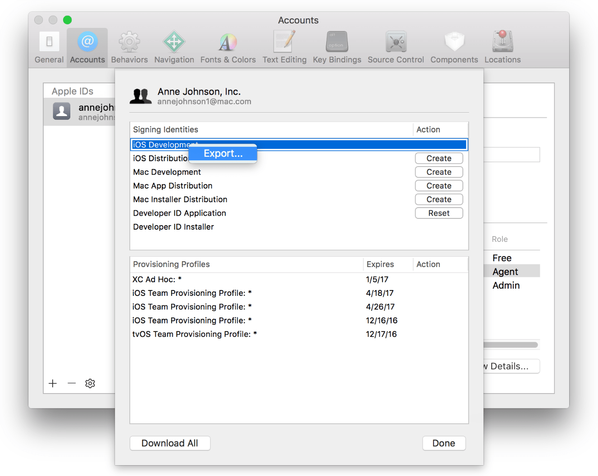Enter a filename in the Save As dialog. You can set a password and a verification to store it securely, but it’s not necessary.
Xcode will export the requested certificate in .p12 format.
Exporting iOS code signing certificates manually
Start Keychain Access.
On the top left sidebar select
loginand on the bottom left selectMy Certificates.This will list all your installed certificates and the associated private key.
Select the one that you would like to export and choose
Exportfrom the pop-up menu.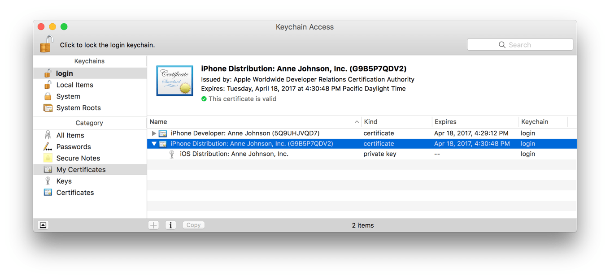Enter a filename in the Save As dialog. You can set a password and a verification to store it securely, but it’s not necessary.
Keychain Access will export the requested certificate in .p12 format.
Exporting iOS provisioning profiles with Xcode
Start Xcode.
Select
Xcode > Preferencesfrom the navigation bar.At the top of the window select
Accounts.Select your Apple ID and your team from the right side bar, then click on
View Details....A dialog will appear where you will see your code signing identities and the provisioning profiles.
Locate the profile that you are looking for under Provisioning Profiles.
If you don’t have it installed on the system, click on the
Downloadbutton next to it.Choose
Show in finderfrom the pop-up menu, that will show you the installed provisioning profile for you.
Exporting iOS provisioning profiles manually
Go to https://developer.apple.com and log in.
Select Certificates, Identifiers & Profiles from the left sidebar.
Navigate to Provisioning Profiles > All.
Find the Provisioning Profile you are looking for from the list or use the search to filter.
Click on the selected Provisioning Profile, this will expand the details.
If its status is invalid, you can click on the
Editbutton and save again.Click on the
Downloadbutton to download it and double click to install on your macOS.
Troubleshooting iOS code signing
iOS code signing can be complicated, with several potential issues. We've collected some of the most common issues and their potential solutions.
iOS code signing can be complicated, with several potential issues. We've collected some of the most common issues and their potential solutions. Let’s look into what you can do to make sure code signing works!
Code signing and clean virtual machines
Every Bitrise build uses a clean virtual machine with no leftover files and configuration from previous builds. While you most likely have all the necessary code signing files (certificates and provisioning profiles) available on your local machine this is not the case with our virtual machines. They do not contain any code signing files relevant to your project, that is why you have to make sure:
You choose the right code signing asset management option to upload the provisioning profiles to Bitrise. From here our Steps will download the files to the virtual machine at runtime.
You upload the necessary signing certificates to the Code Signing tab.
You have connected your Bitrise account to the Apple Developer portal. (This step is not needed if you use the Certificate and Profile Installer Step.) to Apple Developer portal.
If you suspect an error is related to code signing, there is almost certainly a problem with one of these three. When trying to build an iOS app on Bitrise, we strongly recommend generating an .ipa file of the app locally, on your own machine first. If that fails, the build will certainly fail on Bitrise, too.
Verbose logs
If you are getting any issues, make sure you enable the Verbose log input in your code signing asset management or building Step to get more information on the nature of the issue.
iOS code signing Steps fail
Our iOS code signing Steps manage your provisioning profiles for you: they download the profiles from the Apple Developer portal and install them for you. Here’s what you can do if these Steps fail:
Before trying to use this Step, generate an .ipa file locally - with the same export method you want to use on Bitrise - to ensure that the profiles are uploaded to the Apple Developer portal.
Make sure that your Bitrise account is connected to the Apple Developer portal and that you have at least an Admin role in your Apple Developer team.
File count limit on provisioning profiles
The maximum number of provisioning profiles and .p12 certificates you can upload to the Code Signing tab on Bitrise is 30. If you’ve already reached this limit and wish to use even more, then here are a few tips on how to use even more provisioning profiles:
Use a Step with automatic provisioning, such as Xcode Archive and Export for iOS, Export iOS and tvOS Xcode Archive, Xcode build for testing for iOS , or Manage iOS Code Signing. These Steps only require the code signing identities (certificates with .p12 extension) to be uploaded to Bitrise. You can download the provisioning profiles from the Apple Developer portal on-the-fly during the build if you have connected your Apple Developer account to Bitrise.
You can create a .zip file containing the required certificates/profiles. In this case, you don’t need to upload any certificates/profiles on Bitrise. During the build you can download the .zip file and update the certificate/profile related inputs of the Certificate and Profile Installer Step to match the path to the certificate/profile on the build machine. Note that the Certificate and Profile Installer Step supports local paths and URLs for certificates and profiles.
You can host the profiles and certificates yourself, and only add an URL that is pointing to a given certificate/profile to the workflow.
Also note that multiple URLs can be specified for both the certificate and profile inputs. Make sure you separate them with a pipe (|) character.
Could not install the app on a device
To install iOS apps on a given device, you have to either:
Export an IPA file with the
developmentexport method, with the device’s UDID registered in the provisioning profile used for the export.Export an IPA file with the
ad-hocexport method and install the app via the public install page generated by the Deploy to Bitrise.io Step.
If you can't install an app on a given device:
Check that the device UDID is included in the app’s provisioning profile.
If you use manual provisioning, check the provisioning profile you uploaded to Bitrise.
Check the logs to see if the Xcode Archive & Export for iOS Step used the provisioning profile with the device’s UDID in it.